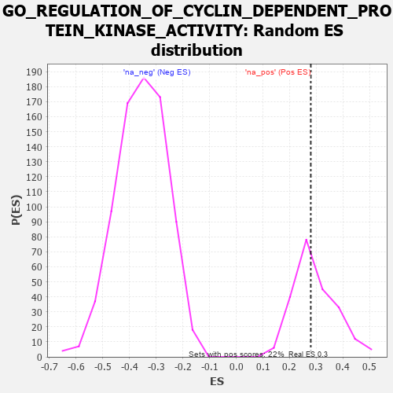

| | | Dataset | 7d |
| Phenotype | NoPhenotypeAvailable |
| Upregulated in class | na_pos |
| GeneSet | GO_REGULATION_OF_CYCLIN_DEPENDENT_PROTEIN_KINASE_ACTIVITY |
| Enrichment Score (ES) | 0.27932972 |
| Normalized Enrichment Score (NES) | 0.94818157 |
| Nominal p-value | 0.5251142 |
| FDR q-value | 0.77789366 |
| FWER p-Value | 1.0 |
Table: GSEA Results Summary
 Fig 1: Enrichment plot: GO_REGULATION_OF_CYCLIN_DEPENDENT_PROTEIN_KINASE_ACTIVITY
Fig 1: Enrichment plot: GO_REGULATION_OF_CYCLIN_DEPENDENT_PROTEIN_KINASE_ACTIVITY
Profile of the Running ES Score & Positions of GeneSet Members on the Rank Ordered List
| PROBE | GENE SYMBOL | GENE_TITLE | RANK IN GENE LIST | RANK METRIC SCORE | RUNNING ES | CORE ENRICHMENT | | 1 | SPDYA | | | 211 | 1.026 | 0.0226 | Yes |
| 2 | CCNH | | | 301 | 0.817 | 0.0506 | Yes |
| 3 | WEE2 | | | 333 | 0.766 | 0.0835 | Yes |
| 4 | CCNB2 | | | 429 | 0.672 | 0.1037 | Yes |
| 5 | CCNB1 | | | 581 | 0.601 | 0.1135 | Yes |
| 6 | CDK7 | | | 686 | 0.564 | 0.1274 | Yes |
| 7 | CDC6 | | | 709 | 0.557 | 0.1514 | Yes |
| 8 | BLM | | | 804 | 0.531 | 0.1650 | Yes |
| 9 | STOX1 | | | 905 | 0.506 | 0.1767 | Yes |
| 10 | CCND2 | | | 949 | 0.496 | 0.1950 | Yes |
| 11 | MEN1 | | | 1003 | 0.483 | 0.2115 | Yes |
| 12 | AKT1 | | | 1040 | 0.476 | 0.2298 | Yes |
| 13 | SRC | | | 1128 | 0.459 | 0.2408 | Yes |
| 14 | CKS2 | | | 1165 | 0.452 | 0.2579 | Yes |
| 15 | CCNY | | | 1168 | 0.451 | 0.2793 | Yes |
| 16 | CCNK | | | 1596 | 0.374 | 0.2435 | No |
| 17 | CCNC | | | 1603 | 0.373 | 0.2606 | No |
| 18 | CDK4 | | | 1626 | 0.370 | 0.2756 | No |
| 19 | CCNG2 | | | 1761 | 0.344 | 0.2752 | No |
| 20 | KAT2B | | | 2502 | 0.226 | 0.1927 | No |
| 21 | CCNJ | | | 4393 | -0.075 | -0.0418 | No |
| 22 | CDC37 | | | 4446 | -0.084 | -0.0444 | No |
| 23 | APC | | | 4558 | -0.107 | -0.0532 | No |
| 24 | CCNL1 | | | 4624 | -0.123 | -0.0555 | No |
| 25 | IPO7 | | | 5142 | -0.236 | -0.1094 | No |
| 26 | IPO5 | | | 5207 | -0.248 | -0.1055 | No |
| 27 | PTEN | | | 5262 | -0.261 | -0.0998 | No |
| 28 | LATS1 | | | 5412 | -0.298 | -0.1043 | No |
| 29 | CCNT2 | | | 5804 | -0.406 | -0.1341 | No |
| 30 | TTBK1 | | | 5969 | -0.460 | -0.1327 | No |
| 31 | PLK1 | | | 6082 | -0.500 | -0.1228 | No |
| 32 | CCNG1 | | | 6105 | -0.507 | -0.1013 | No |
| 33 | TFAP4 | | | 6254 | -0.556 | -0.0932 | No |
| 34 | EGFR | | | 6708 | -0.765 | -0.1137 | No |
| 35 | PKD1 | | | 7628 | -1.611 | -0.1522 | No |
| 36 | CASP3 | | | 7747 | -1.902 | -0.0758 | No |
| 37 | PKD2 | | | 7822 | -2.167 | 0.0188 | No |
Table: GSEA details [plain text format]

Fig 2: GO_REGULATION_OF_CYCLIN_DEPENDENT_PROTEIN_KINASE_ACTIVITY: Random ES distribution
Gene set null distribution of ES for GO_REGULATION_OF_CYCLIN_DEPENDENT_PROTEIN_KINASE_ACTIVITY